The 2026 Outbreak — Why Hantavirus Is Front-Page News Again
Why does this matter to patients in the Philippines? Two reasons. First, Filipino workers in international maritime, hospitality, and healthcare settings now face documented exposure pathways previously not associated with hantavirus. Second — and more quietly — Seoul hantavirus is already present in Philippine rats. The Department of Health confirmed zero human cases in 2026, but scientific surveys have detected Seoul virus in Rattus norvegicus (the common brown rat) across the country.
What makes the 2026 outbreak unusual
Most hantaviruses cannot spread from person to person — you can only catch them from infected rodents. Andes virus (ANDV) is the sole exception: it has documented, though rare, human-to-human transmission. This is why WHO issued a global alert for the MV Hondius event, and why countries across five continents were placed on watch.
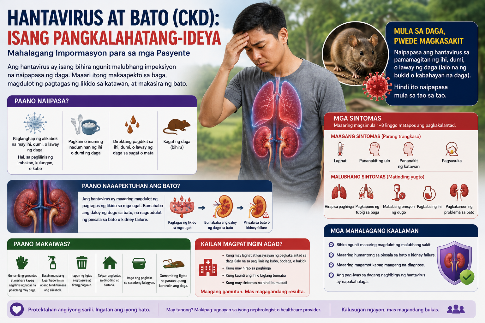
2026 MV Hondius outbreak: 11 cases, 3 deaths, 23 countries. Filipino crew predominantly affected. Seoul virus already detected in Philippine rats.
What Is Hantavirus — and How Do You Get It?
Hantavirus is a family of viruses carried by rodents. Unlike dengue (mosquito-borne) or leptospirosis (floodwater-borne), hantavirus spreads almost exclusively through infected rodent droppings, urine, or saliva — usually when particles become airborne and are inhaled. You do not need to be bitten. Simply cleaning a room with dried rat droppings — without protection — is enough exposure.
HFRS — The Kidney Form
Hemorrhagic Fever with Renal Syndrome is caused by Old World hantaviruses — primarily Hantaan and Seoul virus in Asia. The kidneys are the primary target. This is the form most relevant to the Philippines. Around 150,000 HFRS cases occur globally each year, mostly in China and Korea.
HPS — The Lung Form
Hantavirus Pulmonary Syndrome is caused by New World hantaviruses — primarily Sin Nombre (USA) and Andes virus (South America). The lungs are the primary target. This is the form behind the 2026 MV Hondius outbreak. Case fatality rate can reach 35–40%.
Seoul Virus — The Philippine Risk
Seoul orthohantavirus (SEOV) is carried by the common brown rat (Rattus norvegicus) — the same city rat found across Metro Manila, Cebu, and Davao. SEOV is documented in Philippine rats. It causes a milder HFRS than Hantaan virus, but can still cause AKI requiring dialysis.
Who is at highest risk in the Philippines?
Field workers (rice harvests, sugarcane), construction workers (clearing debris), slaughterhouse workers, sewage workers, people cleaning after flooding, and anyone living in areas with high rat density. Seoul virus spreads via urban rats — it is not only a rural disease. The post-flooding period (July–October typhoon season) is the highest-risk window.
How Hantavirus Destroys the Kidneys — Step by Step
Hantavirus does not directly poison kidney cells. Instead, it hijacks the immune system into attacking the body's own blood vessel lining. The kidneys — with their dense network of tiny blood vessels — take the worst of this damage.
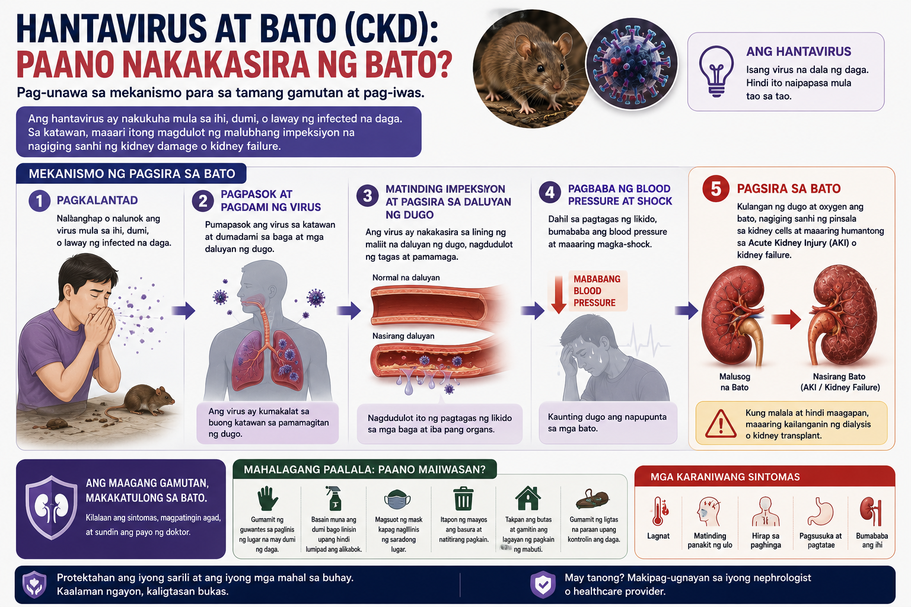
Hantavirus binds endothelial cells via β3-integrin, triggering a cytokine storm and capillary leak that leads to proteinuria, oliguria, and acute kidney injury.
You inhale the virus
Dried particles from rodent droppings or urine are disturbed and become airborne. The virus enters through the respiratory tract and reaches the bloodstream within hours.
The virus infects blood vessel lining cells
Hantavirus has a specific entry point — a receptor called β3-integrin on the surface of endothelial cells (the cells that line all blood vessels). It infects these cells throughout the body while remaining largely invisible to the immune system for several days.
The immune system launches a massive counterattack
When the immune system finally detects the infection, it releases a storm of inflammatory chemicals (cytokines). This response — not the virus itself — causes the damage. Blood vessels become "leaky," plasma floods out of the circulation, and blood pressure drops dangerously.
The kidney's blood vessels hemorrhage
The kidney is packed with tiny blood vessels (glomeruli) that act as filters. When capillary leakage causes bleeding into the kidney's central zone (medullary hemorrhage), filtration collapses. Urine output drops, creatinine rises — this is acute kidney injury.
Platelets are consumed
The same immune response destroys platelets — the blood cells that control clotting. This causes the bleeding tendency (petechiae, gum bleeding, blood in urine) that accompanies kidney failure in HFRS.
Recovery — or scarring
In most healthy people, the immune response subsides after 1–3 weeks, and the kidneys gradually recover. In patients with pre-existing CKD, or in severe cases, the inflammatory damage can leave permanent scarring — accelerating kidney failure.
The 5 Phases of HFRS — What to Expect
HFRS follows a predictable sequence of five clinical phases. Knowing which phase you or your family member is in is critical — the management needs are completely different at each stage, and the dangers are different too.
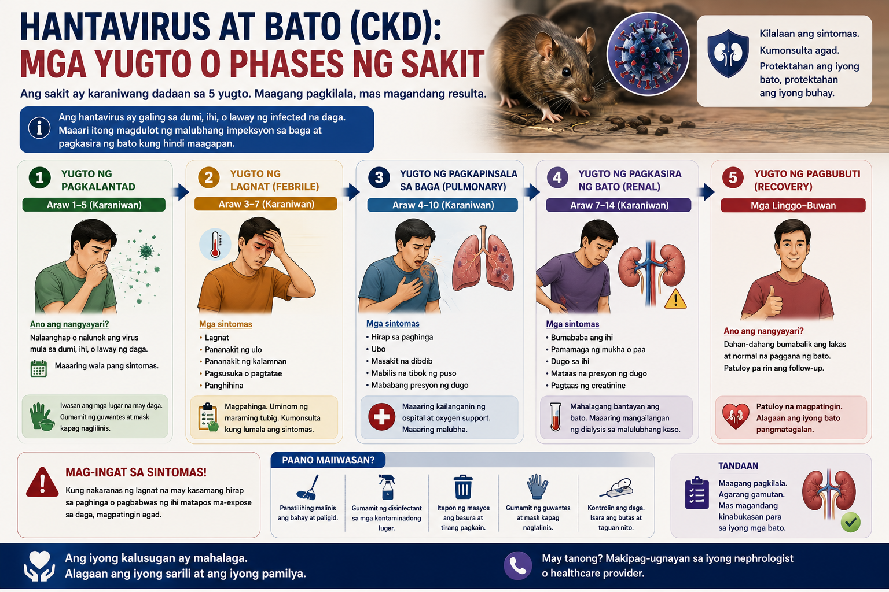
HFRS follows five predictable phases. The oliguric phase is the most dangerous — kidney failure and dialysis risk peak here. Most patients recover with proper hospital care.
The dangerous paradox of the diuretic phase
Many patients and families feel relieved when urine output surges in Phase 4 — "the kidneys are working again!" But this phase kills through dehydration and dangerous drops in sodium and potassium. You must be under medical care during the diuretic phase, even though you appear to be improving. Aggressive electrolyte replacement is essential.
Warning Signs — Go to the ER Immediately
If you have had any possible rodent exposure in the past 2–6 weeks and develop any of the following, do not wait for a doctor's appointment. Go directly to the emergency room.
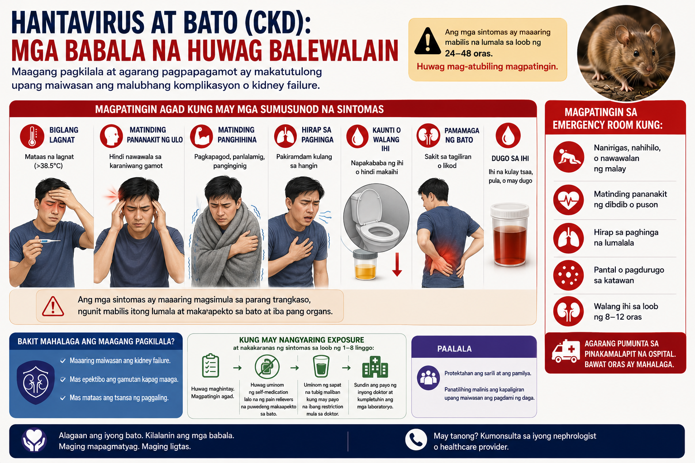
Go to the emergency room immediately if you have any of these signs after possible rodent exposure. Do not wait.
Diagnosis — What Tests Will Be Done
HFRS is frequently misdiagnosed as dengue or leptospirosis in Philippine hospitals because all three present with fever, thrombocytopenia, and kidney involvement. The combination of low platelets + rising creatinine + recent rodent exposure should always raise the possibility of HFRS.
| Test | What It Shows in HFRS | Timing |
|---|---|---|
| CBC with platelet count | Thrombocytopenia (platelets <100,000); leukocytosis with left shift; hematocrit may rise early | From Day 1–2 |
| Creatinine & BUN | Rapidly rising; may reach 10–15 mg/dL in severe cases during oliguric phase | From Day 3–4 |
| Urinalysis | Hematuria (blood), proteinuria, granular casts — this combination is highly suggestive | From Day 2 |
| Electrolytes | Hyponatremia; hyperkalemia (oliguria phase); hypokalemia (diuretic phase) | Monitor daily |
| Serology — IgM | Positive from Day 3–4; confirms active infection; preferred test in PH if available | Day 3 onward |
| Serology — IgG | Positive from Week 1; useful for confirmation and seroprevalence studies | Week 1 onward |
| RT-PCR | Positive only during the short viremic window (first 4–6 days); negative later | Days 1–6 only |
| Liver enzymes | Mildly elevated (unlike dengue or leptospirosis where hepatitis is more prominent) | Variable |
Why HFRS is often missed in the Philippines
Hantavirus serology is not routinely available in most Philippine government hospitals — it is available at Research Institute for Tropical Medicine (RITM) and a limited number of reference laboratories. Most HFRS patients are managed clinically under a dengue or leptospirosis label. If you have a febrile illness with AKI and clear rodent exposure — ask your doctor specifically about hantavirus serology at RITM.
Treatment and Recovery
There is no cure for hantavirus. Treatment is entirely supportive — keeping the body stable while the immune system resolves the infection. This sounds simple but is extremely demanding: the fluid management alone requires hospitalization.
The Fluid Tightrope
Fluid management in HFRS is one of the most delicate balancing acts in clinical medicine. During the oliguric phase, too much fluid causes pulmonary edema and fluid overload. During the diuretic phase, too little fluid causes hypovolemic shock. The dangers are opposite — and the phase can change within hours.
🔴 Oliguric Phase — Restrict Fluids
- Give only: insensible losses (~500 mL/day) + yesterday's urine output
- Avoid IV boluses — they flood the lungs
- Daily weight monitoring mandatory
- Restrict sodium intake
- Dialysis if you cannot maintain balance
🟣 Diuretic Phase — Replace Aggressively
- Match urine output (3–6 L/day is common)
- Oral replacement preferred if tolerated
- Monitor sodium and potassium every 12 hours
- Hypokalemia is common and dangerous
- Risk: dehydration and electrolyte collapse
Dialysis
Approximately 5–15% of HFRS patients require temporary dialysis support. This is almost always temporary — the vast majority of patients who are dialyzed for HFRS are off dialysis within 2–4 weeks as the kidneys recover. HFRS dialysis is not permanent dialysis. This is important for families to hear clearly during the acute phase.
Ribavirin
Ribavirin (an antiviral medication) has evidence for reducing severity in HFRS caused by Hantaan virus, particularly when started within the first 5 days of illness. Evidence is weaker for Seoul virus. It requires dose reduction in kidney failure and is contraindicated in pregnancy. Your doctor will decide if it is appropriate based on severity and timing.
Do NOT take these during HFRS
NSAIDs (mefenamic acid, ibuprofen, diclofenac, naproxen) — these are nephrotoxic and will worsen kidney failure. Aspirin — worsens bleeding risk with already-low platelets. Use paracetamol (acetaminophen) for fever control only, and only at appropriate doses. Tell your doctor every medication you are taking, including herbal remedies.
HFRS Severity & Dialysis Risk Tool
This tool uses clinical parameters to estimate HFRS severity and dialysis risk. It is a decision-support aid — not a substitute for physician judgment. Designed for use with laboratory results in hand.
If You Already Have CKD — HFRS Is a Higher-Stakes Emergency
Chronic kidney disease dramatically changes the outcome of hantavirus infection. The kidneys are already working below capacity — the same immune-mediated injury that causes temporary AKI in a healthy person can cause permanent kidney failure in a CKD patient.
Why CKD Makes HFRS Worse
A healthy kidney has enormous reserve — it can lose more than 50% of function before creatinine even rises. A Stage 3 CKD kidney is already at 50% or less. The same HFRS injury that sends a healthy patient to the oliguric phase briefly can send a CKD patient straight to dialysis — and they may not come off it.
Risk of Non-Recovery
In healthy patients, the risk of permanent dialysis from HFRS is very low (<5%). In patients with CKD Stage 3–4, the risk of "non-recovery" — where dialysis becomes permanent — rises to 15–30%. This is because HFRS injury may tip the patient past the point of no return for their baseline kidney function.
What Changes in CKD Patients
- Lower threshold for hospital admission — do not manage at home
- Earlier dialysis initiation — do not wait for "standard" indications
- Hold ACE inhibitors and ARBs during the oliguric phase (risk of hyperkalemia)
- Hold metformin immediately (lactic acidosis risk with AKI)
- Ribavirin dose reduction required if eGFR <60; avoid if <30 without guidance
- More aggressive potassium monitoring — hyperkalemia is faster and more severe
- Post-discharge follow-up at 1, 3, 6, and 12 months — creatinine, UACR, and BP
After you recover — your kidneys need watching
Even patients who recover fully from HFRS may have accelerated CKD progression afterward. A subset develop new proteinuria that persists for months. If you have pre-existing CKD and survived HFRS, your nephrologist should check your labs more frequently in the year following your illness — do not skip these follow-up visits.
Prevention — The Philippines Context
There is no hantavirus vaccine approved or available in the Philippines. China and South Korea have bivalent vaccines for Hantaan and Seoul virus — but these are not accessible here. Prevention is entirely behavioral.
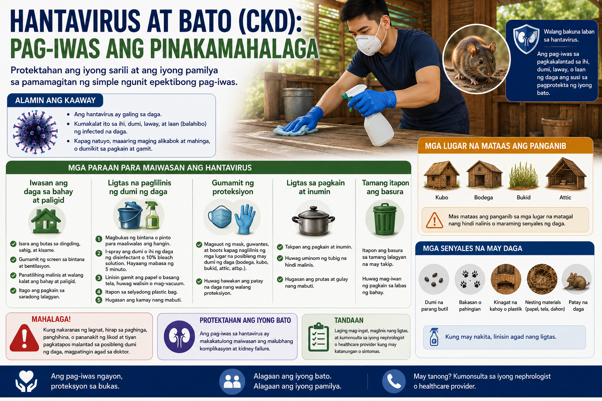
No hantavirus vaccine is available in the Philippines. Prevention through rodent exposure avoidance is the only protection.
Highest-Risk Situations in the Philippines
What to Do
- Wet the area before cleaning — never sweep or vacuum dry rat droppings; spray with bleach solution first
- Wear gloves and an N95 mask when cleaning any area with possible rodent activity
- Store food in rodent-proof containers — not open sacks or cardboard boxes
- Seal all entry points — holes in walls, pipes, floors; rats can enter through gaps as small as 2 cm
- Do not touch dead rodents with bare hands; use gloves and dispose in sealed bags
- Keep surroundings clean especially garbage, compost, and standing water after rain
- After flooding: assume all surfaces that contacted floodwater may be contaminated; clean with bleach
- Ventilate closed, long-unused spaces for 30 minutes before cleaning
For seamen and OFWs
Following the MV Hondius outbreak, ship crew — especially those working in cargo holds, engine rooms, and storage areas — should be aware of rodent control protocols. Report any rat sightings onboard to the ship's safety officer. Andes virus (the strain on MV Hondius) is also capable of limited person-to-person spread through very close respiratory contact with infected individuals.
Hantavirus HFRS — Evidence-Based Management & Global Epidemiology
Staging, differential diagnosis, fluid and RRT management, CKD-on-HFRS considerations, and 2026 outbreak data
2026 Outbreak Summary & Global Epidemiology
Global HFRS Burden (2024–2025 Data)
| Region / Country | Annual Cases | Virus | Trend |
|---|---|---|---|
| China | 10,000–15,000 HFRS/year | Hantaan, Seoul | ↓ Declining (0.99→0.31/100k, 2010–2024); bivalent vaccine in use |
| South Korea | 400–600/year | Hantaan, Seoul | ↓ Declining; bivalent vaccine available |
| Europe | 1,885 in 2023 (0.4/100k) | Puumala, Dobrava, Seoul | ↑ Range expanding northward; lowest rate 2019–2023 |
| Americas (8 countries) | 229 cases, 59 deaths in 2025 | Andes, Sin Nombre, others | ↑ Argentina doubled year-over-year (101 cases Jun 2025–May 2026) |
| Philippines | 0 confirmed in 2026 (DOH) | Seoul (in rats) | ⚠ Surveillance gap; Seoul virus seroprevalence documented in Rattus norvegicus |
| Southeast Asia | Limited surveillance data | Seoul, Hantaan | Pooled seroprevalence in small mammals: 6.07%; Indonesia 17.49%, Singapore 10.53% |
Sources: WHO DON-600/601 (May 2026); CDC HAN-00528/529; PLOS NTDs meta-analysis (2024); China NHC Q1 2026; ECDC Surveillance Report 2023; GMA News / DOH (May 2026).
Global Risk Heatmap — Endemic Zones & Emerging Spread
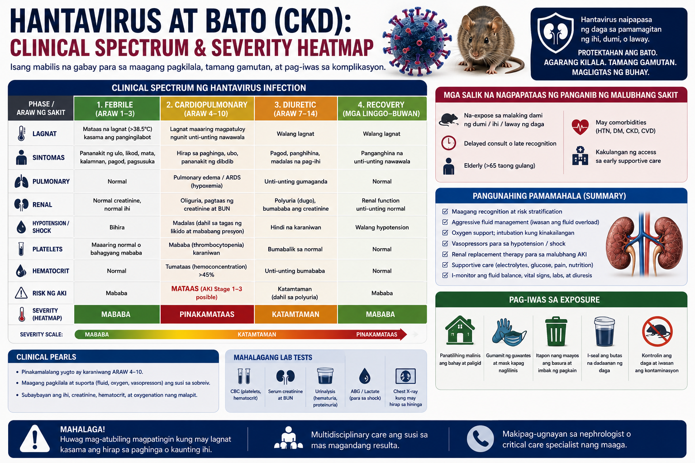
HFRS causes 150,000 cases/year globally, predominantly Asia. HPS CFR reaches 35–40% in the Americas. Seoul virus is cosmopolitan via Rattus norvegicus.
The following table summarizes burden, virus strains, and risk trajectory by region — the data layer underlying the heatmap image above.
| Region | Risk Level | Dominant Strains | Rodent Host | Key Notes |
|---|---|---|---|---|
| Eastern China Heilongjiang, Shaanxi, Shandong |
Critical | Hantaan (HTNV), Seoul (SEOV) | Apodemus agrarius, Rattus norvegicus | 10,000–15,000 cases/yr; declining with vaccination; winter/spring spike |
| Korean Peninsula | High | Hantaan (HTNV), Seoul (SEOV) | Apodemus agrarius | 400–600/yr; bivalent vaccine available; declining trend |
| South America Argentina, Chile, Brazil |
High | Andes (ANDV), Sin Nombre (SNV) | Oligoryzomys longicaudatus | 229 cases, 59 deaths in 2025; Argentina doubled YoY; El Niño-driven spikes; ANDV = person-to-person capable |
| Europe Finland, Sweden, Germany, France |
Moderate | Puumala (PUUV), Dobrava (DOBV), Seoul (SEOV) | Myodes glareolus (bank vole) | 1,885 cases in 2023; northward range expansion with warming winters; mast event cycles |
| United States Four Corners, Western states |
Moderate | Sin Nombre (SNV), New York (NYV) | Peromyscus maniculatus | ~35 cases/yr; western/arid regions highest risk; 2025 study maps drier, socially vulnerable zones |
| Southeast Asia Indonesia, Singapore, Thailand |
Low–Mod | Seoul (SEOV), Hantaan (HTNV) | Rattus norvegicus, Rattus rattus | 6.07% pooled seroprevalence in rodents; Indonesia 17.49%; limited human surveillance data |
| Philippines | Low* | Seoul (SEOV) probable | Rattus norvegicus | 0 confirmed human cases 2026 (DOH); Seoul virus in rats documented; surveillance gap; MV Hondius Filipino crew exposure |
| Africa Sub-Saharan port cities |
Emerging | Seoul (SEOV) | Rattus norvegicus (via seaports) | SEOV spread via maritime traffic; host-switching to Rattus rattus possible; expanding risk |
*Low designation reflects absence of confirmed human cases, not confirmed absence of transmission risk. Surveillance capacity is the primary limiting factor.
Pathophysiology of HFRS
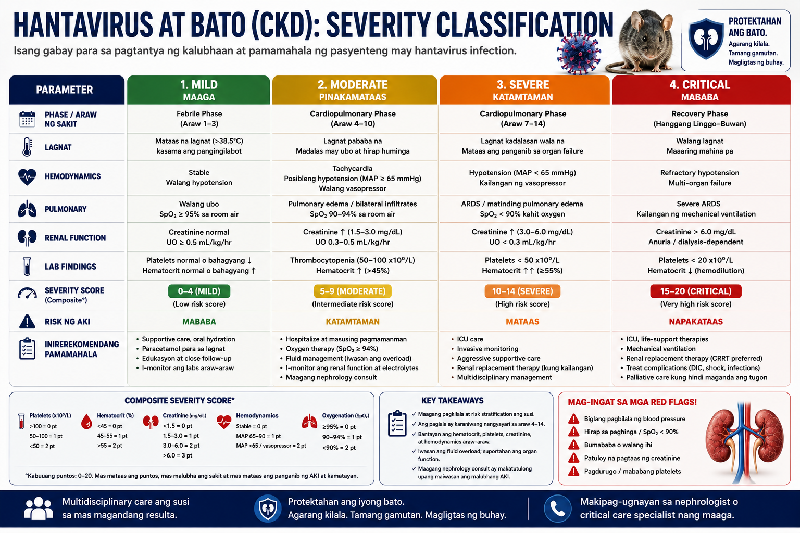
Hantavirus impairs vascular permeability via β3-integrin/CD55 binding → cytokine storm → capillary leak → parallel renal (HFRS), vascular (hemorrhage/DIC), and pulmonary (HPS/ARDS) injury tracks.
Viral Entry & Immune Evasion
Hantavirus enters via β3-integrin on endothelial cells, platelets, and macrophages. Early innate immune evasion — via IFN-β antagonism — allows viral replication to proceed for 4–7 days before adaptive immunity is triggered. This creates the characteristic prodrome-to-shock lag.
Cytokine Storm & Endothelial Permeability
CD8+ T-cell activation triggers massive cytokine release (TNF-α, IFN-γ, IL-6). This drives endothelial permeability via VEGF dysregulation — plasma leaks from vessels into interstitium, causing hypovolemia, third-spacing, and thrombocytopenia from peripheral consumption and immune destruction.
Renal Medullary Hemorrhage
The renal medulla has particularly rich vascular supply and is exquisitely sensitive to capillary leakage. Peritubular capillary hemorrhage → tubulo-interstitial nephritis → loss of tubular concentrating ability → polyuria/proteinuria → oliguric ATN. Glomerular changes: mesangial proliferation, endothelial swelling.
Coagulopathy
Thrombocytopenia is multifactorial: β3-integrin-mediated platelet dysfunction, immune-mediated destruction, and bone marrow suppression. DIC is unusual in pure HFRS but may supervene in severe/critical disease. Coagulopathy correlates more closely with severity of immune activation than with direct viral replication.
Why HFRS is immune-mediated, not directly cytopathic
Paradoxically, patients with more vigorous immune responses have worse acute illness but may clear virus faster. Immunocompromised patients may have attenuated acute disease but prolonged viremia. This has implications for steroid use: corticosteroids are not standard therapy for HFRS and may be counterproductive except in specific complications (e.g., HFRS-associated pulmonary infiltrates).
HFRS Severity Staging & Differential Diagnosis
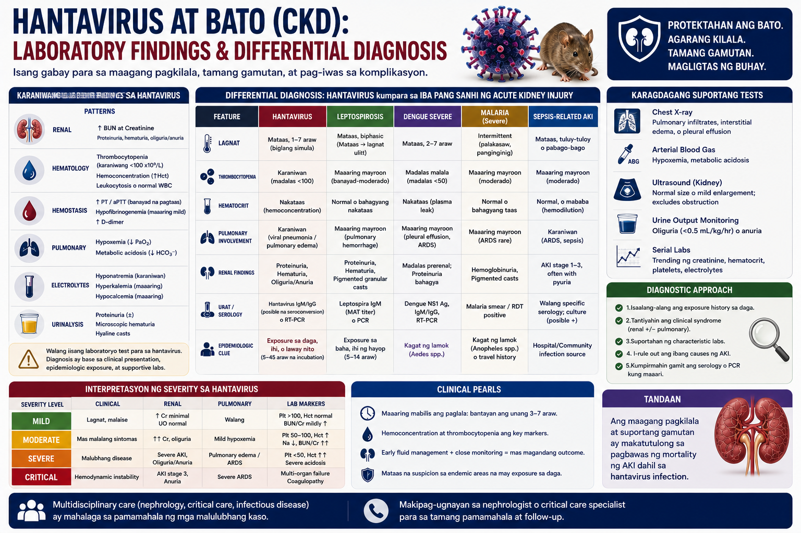
Severity determines dialysis timing. CRRT is preferred in hemodynamically unstable patients. Critical HFRS requires urgent RRT initiation.
WHO / Korean Severity Classification
Differential Diagnosis — HFRS vs. Dengue vs. Leptospirosis
In the Philippines, all three cause fever + thrombocytopenia + AKI, and serology for all three is often unavailable simultaneously. The following features aid discrimination:
| Feature | HFRS (Hantavirus) | Dengue | Leptospirosis |
|---|---|---|---|
| Vector / Exposure | Rodent droppings/urine (inhalation) | Aedes mosquito bite | Floodwater contact (skin/mucosa) |
| Fever Pattern | High, sudden; flushing; conjunctival injection | High, biphasic; retro-orbital pain | High; myalgia; calf tenderness |
| Rash | Rare (flushing, petechiae possible) | Petechiae, maculopapular (Days 3–5) | Rare; occasionally truncal |
| Back/Loin Pain | Prominent, early — cardinal sign | Myalgia generalized | Calf pain prominent; back less so |
| Thrombocytopenia | +++ (defining) | +++ (defining) | + (variable) |
| Renal Involvement | Defining; AKI in all HFRS | 1–10% of cases | Common; Weil's disease (jaundice + AKI) |
| Jaundice | Absent | Rare (<1%) | Present in Weil's disease |
| Liver enzymes | Mildly elevated (1.5–3× ULN) | Moderately elevated (3–10× ULN) | Prominently elevated; conjugated bilirubin ↑ |
| Proteinuria/Hematuria | Early and prominent; granular casts | Mild if AKI present | Moderate; tubular pattern |
| Serology Timing | IgM: Day 3–4; IgG: Week 1; RT-PCR: Days 1–6 | NS1: Days 1–5; IgM: Day 5+ | MAT: Week 1–2; IgM: Week 1 |
| Where to send serology (PH) | RITM (limited availability) | Most DOH-accredited labs | RITM, St. Luke's, Asian Hospital |
The leptospirosis–HFRS diagnostic trap
In a Filipino patient presenting post-flood with fever + AKI + thrombocytopenia, the near-automatic diagnosis is leptospirosis. However, hantavirus (Seoul virus) should be on the differential in patients who describe rodent contact specifically, especially without direct water immersion, or who work on ships, in grain storage, or in post-demolition cleanup. Empiric doxycycline covers leptospirosis; it does not cover HFRS. If the patient is deteriorating despite standard leptospirosis management, HFRS serology via RITM is warranted.
Fluid Management & Renal Replacement Therapy
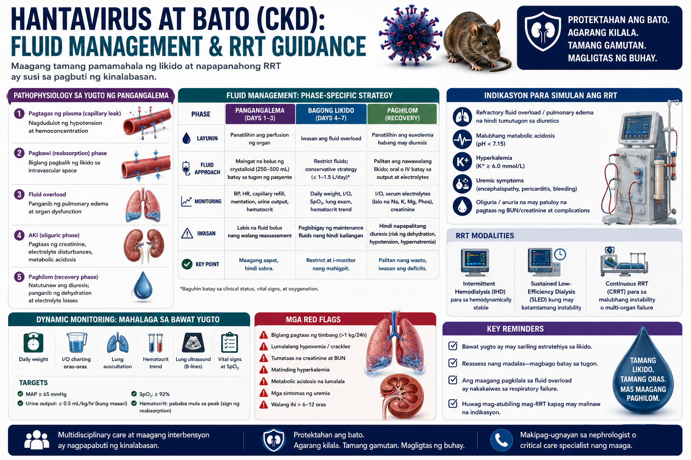
Fluid strategy reverses between phases. Oliguric phase: restrict and monitor for overload. Diuretic phase: replace losses 1:1. Taper RRT when creatinine stabilises.
Oliguric Phase — Fluid Restriction Protocol
- Daily fluid allowance = insensible losses (~500 mL) + previous 24h urine output
- Avoid all prophylactic volume expansion — capillary leak makes this dangerous
- Daily weight is the most reliable fluid balance marker; target zero or minimal gain
- Hypertonic saline (3%) for symptomatic hyponatremia with Na⁺ <125 mEq/L — correct at ≤8–10 mEq/L per 24h to avoid osmotic demyelination
- Furosemide may be trialed for oliguria with adequate MAP (>65), but response is often minimal; do not escalate dose if no diuretic response
- Strict 12-hourly electrolyte monitoring (Na⁺, K⁺, HCO₃⁻)
Diuretic Phase — Replacement Protocol
- Match urine output volume — polyuria of 3–6 L/day is common and expected
- Oral replacement (ORS or light diet + fluids) is preferred if hemodynamically stable
- IV potassium replacement for K⁺ <3.0 mEq/L — can be severe (GI-loss equivalent)
- Monitor for hyponatremia due to hypotonic loss; use isotonic replacement
- Risk of hypovolemic shock during diuretic phase is real — do not restrict fluids here
Dialysis Indications in HFRS
Use lower thresholds than standard AKI — the metabolic derangements in HFRS escalate faster, and the underlying recovery potential justifies proactive intervention:
| Indication | Threshold |
|---|---|
| Hyperkalemia | K⁺ >6.5 mEq/L or rising despite medical management |
| Pulmonary edema | Refractory to fluid restriction; SpO₂ <90% despite oxygen |
| Severe azotemia | BUN >100 mg/dL, Cr >10 mg/dL, or uremic symptoms (encephalopathy, pericarditis) |
| Prolonged oliguria | >5 days with no diuretic response — lower threshold in CKD patients |
| Metabolic acidosis | pH <7.15 or bicarbonate <10 mEq/L refractory to bicarbonate therapy |
| Hemodynamic instability | Vasopressor-dependent — favors CRRT over IHD |
CRRT — Preferred in Shock
HFRS often presents with hemodynamic instability from capillary leak syndrome. CRRT maintains fluid balance without the MAP demands of IHD (requires MAP ≥65 mmHg for vascular access toleration). Use CRRT for vasopressor-dependent patients or MAP <65. CRRT also allows continuous potassium control during the diuretic-to-oliguric transition.
IHD — For Stable Patients
Standard intermittent hemodialysis is appropriate for hemodynamically stable HFRS-AKI meeting dialysis criteria. Sessions 4–6 hours daily or every 48 hours. Expected dialysis duration: 1–3 weeks in most cases. The majority of dialysis-dependent HFRS patients recover renal function — communicate this to families early.
Ribavirin — Evidence & Dosing
Evidence base: RCTs support ribavirin for HTNV-HFRS (China, Korea); evidence for SEOV is extrapolated. Benefit requires initiation within 5 days of symptom onset. No proven benefit after Day 7.
Dosing (IV): Loading 33 mg/kg → 16 mg/kg q6h × 4 days → 8 mg/kg q8h × 3 days.
Dose adjustment: Reduce by 50% if eGFR 30–60. Avoid (or use under specialist guidance) if eGFR <30 or on dialysis. Contraindicated in pregnancy (teratogenic).
Monitoring: CBC for hemolytic anemia (ribavirin's primary toxicity); bilirubin; reticulocyte count.
CKD-on-HFRS — Management Considerations
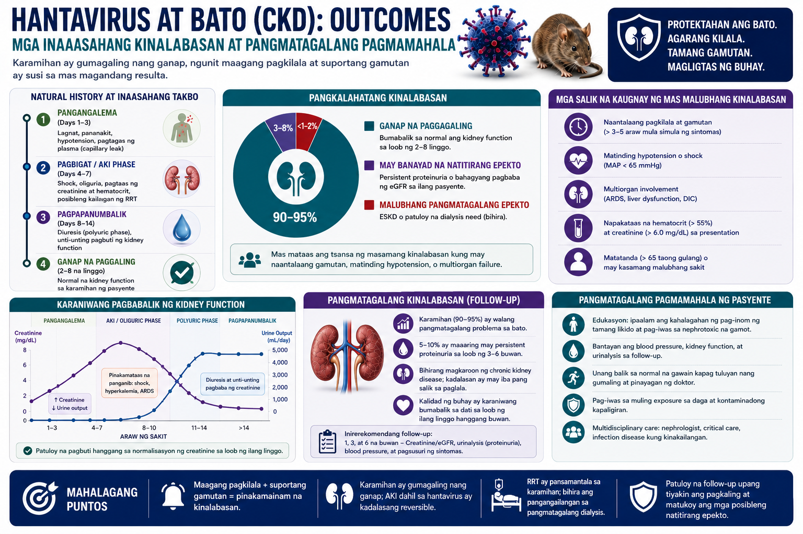
Pre-existing CKD dramatically increases AKI non-recovery risk. Stage 3b carries ~40% risk of permanent progression. Post-HFRS monitoring must continue for 12 months.
| CKD Stage (Baseline) | Non-Recovery Risk | Dialysis Threshold | Key Adjustments |
|---|---|---|---|
| None (eGFR ≥90) | <3% | Standard indications | None required |
| Stage 1–2 (eGFR 60–89) | 3–8% | Standard indications | Closer monitoring; early nephrology consult |
| Stage 3 (eGFR 30–59) | 10–20% | Lower — initiate earlier | Hold ACEi/ARB in oliguria; ribavirin 50% dose; aggressive K⁺ monitoring |
| Stage 4–5 (eGFR <30) | 25–40% | Very low — proactive | Avoid ribavirin without specialist guidance; hold nephrotoxins; early CRRT consideration; family counseling re: permanent RRT risk |
Medications to Hold on Admission
Hold Immediately
- NSAIDs (all)
- Metformin (lactic acidosis risk)
- ACE inhibitors / ARBs (hyperkalemia + hypotension risk during oliguria)
- Herbal remedies (unknown nephrotoxic potential)
Adjust Dose
- Ribavirin (50% if eGFR 30–60)
- Paracetamol (limit to ≤2g/day in severe AKI)
- Renally-cleared antibiotics (dose by eGFR)
- Digoxin (if applicable)
Can Continue
- Calcium channel blockers
- Statins (with caution)
- Insulin (dose carefully with K⁺ monitoring)
Post-HFRS Follow-Up Protocol (CKD Patients)
| Timepoint | Tests | Action |
|---|---|---|
| 1 Month | Creatinine, eGFR, electrolytes, UACR, BP | Resume ACEi/ARB if stable; adjust antihypertensives |
| 3 Months | Creatinine trend, UACR, HbA1c (if diabetic), CBC | Assess for non-recovery; adjust CKD stage; ensure proteinuria is treated |
| 6 Months | Full CKD panel + creatinine slope | If eGFR declining faster than pre-HFRS baseline, intensify nephroprotection |
| 12 Months | Full metabolic panel, UACR, imaging if indicated | Reassess CKD staging; update treatment targets |
Climate Projections — Expanding Hantavirus Risk Zones
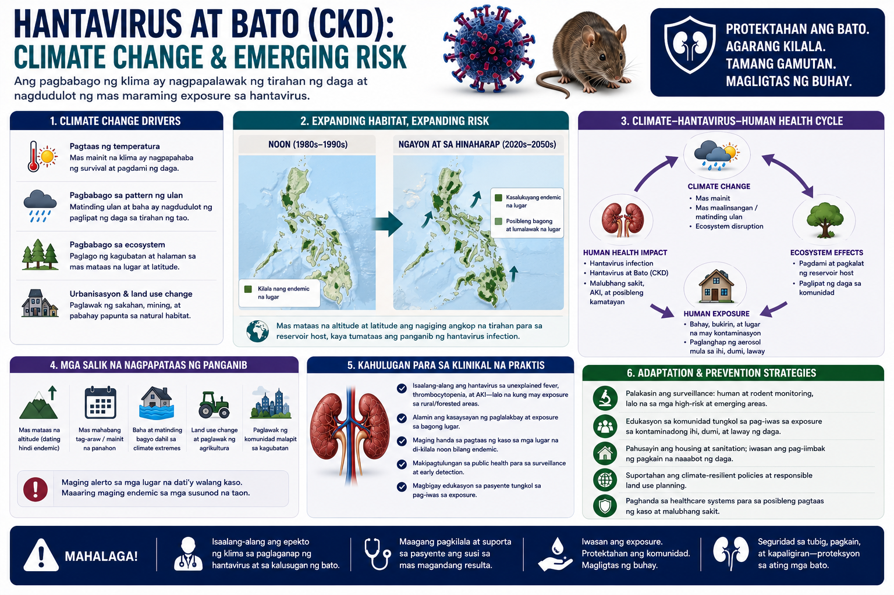
Climate-driven rodent range expansion increases Seoul virus spillover risk across SE Asia. Philippine typhoon corridor creates additional rodent displacement hazard.
A 2025 review (cited in Live Science / UNMC) confirmed that virus-carrying rodent populations are expanding their geographic range as winters warm. This is not a distant projection — it is measurable in current surveillance data.
Milder Winters
Reduced winter die-offs in rodent populations allow year-round persistence in new latitudes. Puumala virus (Europe) is moving northward into Scandinavia. Sin Nombre virus range is expanding in the western US.
Mast Events & Food Booms
El Niño years drive vegetation and seed surges that cause rodent population explosions 6–12 months later. Argentina's 2025–2026 surge (doubled case rate) is directly correlated with a prior El Niño rainfall event increasing food availability.
Maritime Spread of Seoul Virus
Seoul virus is already cosmopolitan via Rattus norvegicus in global shipping. The Philippine archipelago, as a major maritime hub (Manila, Cebu, Davao ports), is exposed to continuous SEOV introduction via cargo vessels. Host-switching to Rattus rattus could accelerate spread inland.
Philippines: Flooding as Amplifier
Typhoon-driven flooding (June–October) displaces rat colonies into urban homes and public spaces. This is the highest-risk window for Seoul virus exposure in the Philippines — analogous to leptospirosis seasonality but via aerosol rather than direct water contact.
Surveillance Gap
With no routine hantavirus serology in Philippine DOH surveillance, confirmed human case counts are almost certainly an underestimate. The PLOS NTDs meta-analysis detected 6.07% rodent seroprevalence across SEA — but only one Philippine study was includable due to data scarcity.
Vaccine Gap
China and South Korea have bivalent vaccines (Hantaan + Seoul). These vaccines are not available in the Philippines. No ANDV vaccine exists. No WHO-recommended vaccine for LMICs. Until surveillance confirms the true burden, vaccine prioritization arguments are difficult to make.
W Rivero, MD, FPCP, DPSN
Specialist in Internal Medicine, Nephrology, and Clinical Nutrition. Practicing integrative and evidence-based nephrology across Quezon City, Pampanga, and Bulacan.Espesyalista sa Panloob na Medisina, Nefrolohiya, at Klinikal na Nutrisyon. Nagpapraktis ng integratibo at ebidensya-batay na nefrolohiya sa Quezon City, Pampanga, at Bulacan.Espesyalista sa Internal nga Medisina, Nefrolohiya, ug Klinikal nga Nutrisyon. Nagpraktis og integratibo ug ebidensya-base nga nefrolohiya sa Quezon City, Pampanga, ug Bulacan.Espesyalista king Panloob na Medisina, Nefrolohiya, at Klinikal na Nutrisyon. Nagpapraktis ning integratibo at ebidensya-base na nefrolohiya sa Quezon City, Pampanga, at Bulacan.

Scan and saveI-scan at i-saveI-scan ug i-saveI-scan at i-save